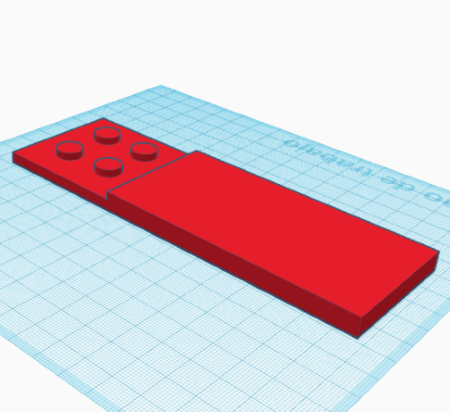
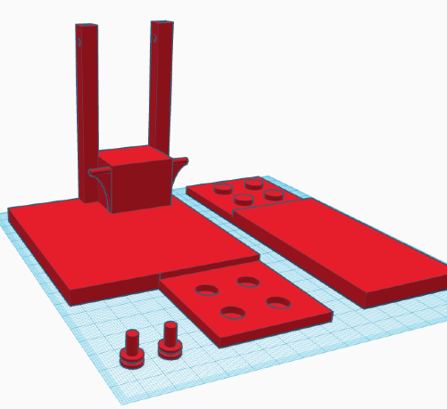

MAQUETA 3D


Esta es nuestra maqueta 3D que utilizaremos como recambio en el caso de que el puente principal de madera se rompa, decidimos hacer esta maqueta principalmente para tener una segunda opción en caso de que la madera se rompa, ya que es muy facil que se pueda romper por que es muy fragil